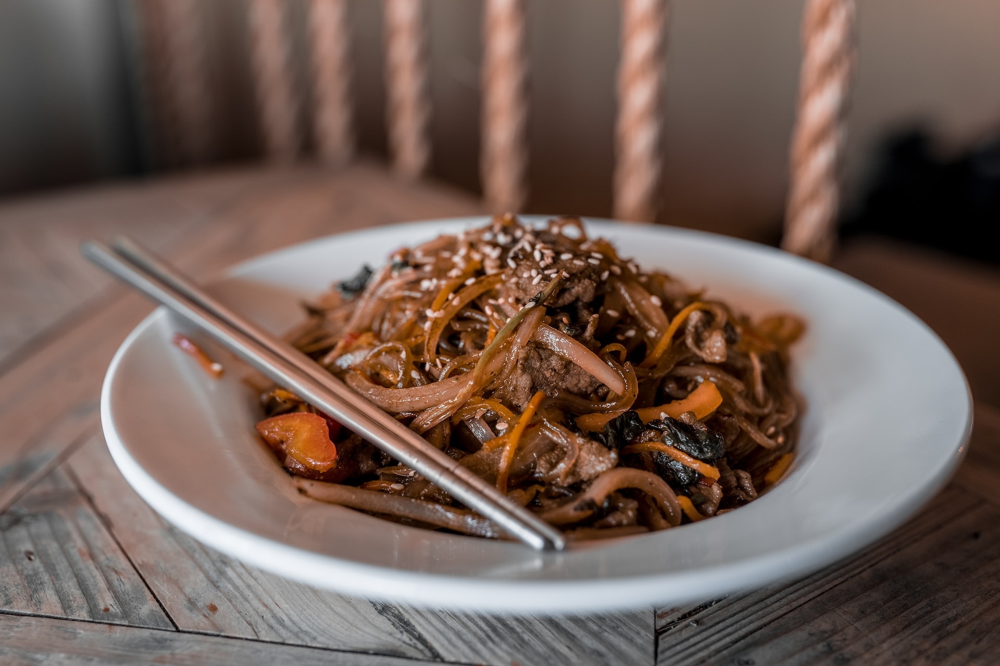

Beef and Noodles

Description
The best beef and noodles you'll ever have! Affordable, quick, and
yummy. I have to give credit to my grandma. She used to cook this
for her 5 kids and then later for all her grandkids.
Ingredients:
- 1 pound sirloin steak, cut into 1-inch cubes
- 2 tablespoons butter
- 1 large onion, sliced
- 1 cup beef stock
- 2 bay leaves
- 1 pinch dried thyme
- salt and ground black pepper to taste
- 1 cup frozen peas
- 1 tablespoon cornstarch
- 4 cups egg noodles
Steps:
-
Heat a skillet over medium-high heat; cook steak, working in
batches, until seared and browned on all sides, about 5 minutes.
Transfer seared steak to a plate.
-
Melt butter in the same skillet over medium heat and sauté onion
until softened, 5 to 10 minutes.
-
Add steak to onion in the skillet; pour in beef stock and season
with bay leaves, thyme, salt, and pepper. Bring to a boil;
reduce heat to low, cover, and simmer until steak is tender,
about 50 minutes.
-
Stir peas and cornstarch into steak mixture; cook uncovered
until liquid thickens, about 10 minutes.
-
Meanwhile, bring a large pot of lightly salted water to a boil.
Cook egg noodles in the boiling water, stirring occasionally
until cooked through but firm to the bite, about 5 minutes;
drain.
- Serve beef mixture over noodles.
Return to home page